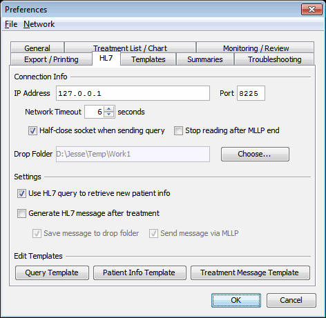

HL7 Functionality
On this Page
Overview
GPD provides two aspects of HL7 integration:
- Retrieval of patient information by querying the EMR for a given Patient ID.
- Generation of an HL7 message either containing (via Base64 encoding) or referencing the path of a treatment-report PDF.
The formats of the query and treatment-report messages, and the interpretation of the reponse to the patient query, are all configured via templates, which are described below.
Preferences
The HL7 tab in program preferences controls GPD’s interface with an EMR system:

IP Address & Port
The network address of the server with which GPD will exchange MLLP-framed HL7 messages.
Advanced Socket Options
Network Timeout
When GPD is waiting to receive or send data over the network, it will wait the specified number of seconds before aborting.
Half-Close socket when sending query
When issuing a query, GPD will re-use the same socket connection to receive the server's reply. A TCP/IP socket can be put into a half-closed state, which may be required by some servers to recognize that the query message has finished sending. Generally you should not enable this option.
Close socket after MLLP reply
If this box is checked, when reading a query response from the server, GPD will stop reading from and close the socket after it encounters the first MLLP end marker
<0x1C>. If unchecked, GPD will continue to receive data until the server closes the socket. This option generally should be enabled.
Drop Folder
Filesystem folder to save HL7 messages.
Choose…to select a folder.Use HL7 query to retrieve new patient info
Check to enable retrieval of patient info via an HL7 query. If checked, when you add a new patient, you will be able to choose between using an HL7 query and entering the name and ID manually.
Generate HL7 message after treatment
Automatically generate an HL7 message after treatment data is collected.
Save message to drop folder
Save the generated HL7 message to the chosen drop folder.
Send message via MLLP
Send the generated message to the specified server via MLLP.
Edit Query/Patient/Treatment Message Templates
Edit the respective template in a text-editor window.
Templates
Patient Query Template
The query template specifies the contents of the HL7 message that will be sent to the server to retrieve patient information when adding a new patient.
Here is an example of one such template:
# PROMPT PATIENT ID <- Query Patient ID:
# SET COUNTRY CODE = AU
MSH.3: BOS
MSH.4: EF
MSH.5: IPM
MSH.6: ISOFT
MSH.7: ${MESSAGE TIMESTAMP}
MSH.9.1: QRY
MSH.9.2: A19
MSH.10: BOS*${UNIQUE ID}
MSH.11: P
MSH.12: 2.3.1
MSH.17: ${COUNTRY CODE}
MSH.18: ASCII
MSH.19.1: ENG
MSH.19.2.1: English
MSH.19.2.2: r
QRD.1: ${MESSAGE TIMESTAMP}
QRD.2: R
QRD.3: I
QRD.4: BOS
QRD.7.1: 1
QRD.7.2: RD
QRD.8.1: ${PATIENT ID}
QRD.8.13: PAS
QRD.9: DEM
QRD.10.1.1: ALL
QRD.10.1.2: rIt is a simple mapping from HL7 fields to their values. The segments should be given in the correct order for the resulting message type (here QRY_A19) because GPD does not rearrange segments to ensure the proper order for each message type.
HL7 field specifications (ex. QRD.7.1) are separated from their values by a colon. Variable values will be expanded as in patient and treatment templates.
At the top of the template you’ll notice two directive lines – a directive line begins with a hash mark ‘#’ followed by a command (i.e. PROMPT or SET), a variable name (here PATIENT ID and COUNTRY CODE), a <- or =, and the “value” of the variable. What the value means depends on the directive:
- For
PROMPTcommands, the value is the prompt that will be displayed to the user; it is the user’s typed response to the prompt that will be used as the variable’s value. - For
SETcommands, the variable is set directly to the value with no user interaction.
In either case, the variable can then be used both in the Patient Query Template – as above, where QRD.8.1 is set to the patent ID that the user entered – and in the Patient Info Template, described below. Note that if no PROMPT directives are found in the Patient Query Template, GPD will prompt the user for a Patient ID and assign the response to the variable PATIENT ID.
The variables available in the query template are
${MESSAGE TIMESTAMP}– the timestamp (in HL7 format) when the query was generated.${UNIQUE ID}– A unique string (generated from a random UUID).- Any variables defined using
PROMPTorSETdirectives.
When a new patient is created via an HL7 query, the query response is saved as an associated file for that patient. It can serve as a reference to the original information, and also enables passthrough segments and response field variables in the treatment message template.
Patient Info Template
This is the flip side of the Patient Query Template – it specifies how the message returned by the EMR will be mapped to patient information in GPD.
Here’s an example:
Name: ${PID.5.1}, ${PID.5.2}, ${PID.5.5}
PATIENT ID: ${QRD.8.1}
DOB: ${PID.7}
SEX: ${PID.8}
Result Interpreter Prefix: Dr.
Result Interpreter Given Name: Ryan
Result Interpreter Surname: Spencer
Reason For Study:
>
> Any variables defined using PROMPT or SET directives in the query template (or the implicit PATIENT ID if no PROMPT directives were found) are available. Other than those, all ${VARIABLE} expansions refer to fields in the HL7 message returned by the server.
The only field required by GPD itself is the Name: field at the top of the template; the rest are up to the user.
Treatment Message Template
This template determines the format of the HL7 message that will be generated after treatment data is collected. An example:
# SET %IP ADDRESS% = 192.168.4.211
# SET %PORT% = 42175
MSH.3: ECT-base64_base64
MSH.4: ECT
MSH.5: PAS
MSH.6: PAS
MSH.7: ${MESSAGE TIMESTAMP}
MSH.9.1: MDM
MSH.9.2: T02
MSH.10: ${UNIQUE ID}
MSH.11.1: P
MSH.11.2: T
MSH.12: 2.6
MSH.18: UNICODE UTF-8
EVN.1: T02
EVN.2: ${TREATMENT TIMESTAMP}
PID.3.1: ${PATIENT ID}
PID.3.4: Default
PID.3.5: PAS
PID.5.1: ${PID.5.1}
PID.5.2: ${PID.5.2}
PID.5.4: ${PID.5.4}
PID.5.5: ${PID.5.5}
PID.7: ${PID.7}
PID.8: ${PID.8}
PV1: ${PASSTHROUGH}
ORC.1: RE
ORC.5: CM
ORC.9: ${MESSAGE TIMESTAMP}
OBR.1: 1
OBR.4.2: Adult
OBR.7: ${TREATMENT TIMESTAMP}
OBR.8: ${TREATMENT TIMESTAMP}
OBR.20: 1
OBR.22: ${MESSAGE TIMESTAMP}
OBR.24: CUS
OBR.25: F
OBR.31.2: ${REASON FOR STUDY}
OBR.32.1.2: ${RESULT INTERPRETER SURNAME}
OBR.32.1.3: ${RESULT INTERPRETER GIVEN NAME}
OBR.32.1.6: ${RESULT INTERPRETER PREFIX}
OBR.32.2: ${TREATMENT TIMESTAMP}
OBR.32.3: ${TREATMENT TIMESTAMP}
OBR.34.1.2: VT
TXA.1: ${UNIQUE ID}
TXA.2: DI
TXA.3: AP
TXA.7: ${TREATMENT TIMESTAMP}
TXA.12: ${PATIENT ID}-${TREATMENT TIMESTAMP}
TXA.16: ${PDF FILENAME}
TXA.17: LA
OBX.1: 1
OBX.2: ED
OBX.3.1: FIND
OBX.3.2: FINDINGS
OBX.3.3: LB
OBX.4: 2
OBX.5.1: DOC
OBX.5.2: ED
OBX.5.3: PDF
OBX.5.4: Base64
OBX.5.5: ${PDF BASE64}
OBX.11: FIn this template we once again have certain special variables:
${MESSAGE TIMESTAMP}, ${UNIQUE ID}– Same meanings as in the Query Template${TREATMENT TIMESTAMP}– HL7 timestamp of the time of treatment collection.${PDF FILENAME}– filename of the generated PDF treatment report.${PDF PATH}–path to the generated PDF treatment report. This path will be valid until the user quits GPD.${PDF BASE64}– PDF contents in Base64 encoding.- Any variables defined using
PROMPTorSETdirectives.
All other variable values are taken from the patient and treatment information as entered by the user, like ${REASON FOR STUDY} in the example, or from passthrough segments and query response field values, both of which are described below.
Passthrough Segments and Response Field Variables
If the patient or treatment was originally created via an HL7 query, then you have two additional features available in the treatment message template: passthrough segments, and response field variables. A passthrough segment looks like
PV1: ${PASSTHROUGH}(where PV1 can be any segment ID). When GPD is generating the HL7 treatment message, it will pass through, unchanged, any corresponding segments that were received in the server query response.
Additionally, you can refer to field values from the query response messages using the standard HL7 field value syntax, ex ${QRD.8.1}. In the example template, these are used to set the value of various fields of the PID segment.
Setting Network Preferences in Templates
The settings chosen on the HL7 tab of Preferences (IP address, etc.) are the default connection parameters; a particular template can override any of those settings. The method of doing this is to use the SET directive to change the value of one of the below special variables. Note that all of the special variable names start and end with percent % characters.
| Variable Name | Corresponding Preference |
|---|---|
%IP ADDRESS% |
IP address |
%PORT% |
Port |
%TIMEOUT% |
Network timeout (in seconds) |
%HALF CLOSE% |
Half-close socket when sending query (true or false) |
%MLLP CLOSE% |
Close socket after MLLP reply (true or false) |
An example of setting connection preferences:
# SET %IP ADDRESS% = 192.168.4.211
# SET %HALF CLOSE% = falseNetwork Transport and File Format
Patient Query (MLLP over TCP/IP)
GPD opens a TCP/IP socket connection to the specified IP address and port and sends the query message in MLLP-block format:
<0x0B>HL7-MESSAGE<0X1C><0X0D>
It waits on the same socket connection to read a reply from the server, also in MLLP-block format. If the Close socket after MLLP reply preference is checked, GPD will close the socket once the message is received; otherwise, GPD will wait for the server to close the socket.
Treatment Report (MLLP over TCP/IP)
GPD opens a TCP/IP socket connection to the specified IP address and port and sends the treatment report message in MLLP-block format. After the bytes are transmitted, GPD closes the socket without reading an acknowledgement.
Treatment Report (Filesystem)
GPD writes the bytes of the treatment report message to the file in standard HL7 format with carriage returns (0x0D) at the end of each segment.